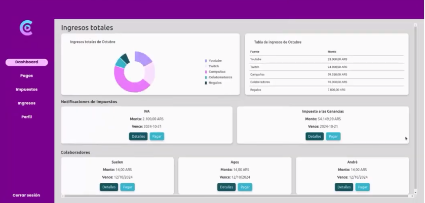

YouCreate - Gestión financiera para creadores de contenido
Una plataforma fintech para administrar ingresos, gastos e impuestos de creadores de contenido.

Una plataforma fintech para administrar ingresos, gastos e impuestos de creadores de contenido.
YouCreate es una plataforma fintech diseñada para ayudar a creadores de contenido a gestionar sus ingresos, gastos y obligaciones fiscales.




El backend de YouCreate está desarrollado en Django con API RESTful, utilizando SQLite en desarrollo y PostgreSQL en producción.
// Backend API principal
GET /api/ingresos - Devuelve ingresos categorizados
POST /api/pagos-colaboradores - Registra pagos a colaboradores
GET /api/obligaciones-fiscales - Resumen de impuestos a pagar
Se ha implementado seguridad con autenticación JWT, cifrado de datos sensibles y validación por OTP.
En este proyecto, desarrollé la lógica para el cálculo de impuestos según el país y los ingresos del usuario.
Además, implementé el sistema de notificaciones automáticas que envía emails sobre vencimientos fiscales y cambios críticos en la cuenta.
También colaboré en la seguridad de autenticación con confirmación de correo y códigos OTP.
Durante el desarrollo enfrentamos desafíos en la optimización del UX/UI y la integración de pagos seguros.
Aprendimos sobre seguridad en fintech y la importancia de una interfaz intuitiva. Planeamos mejorar la integración de pagos internacionales.